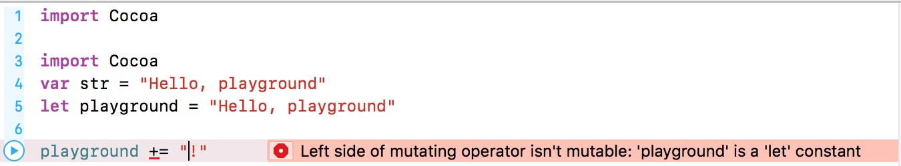
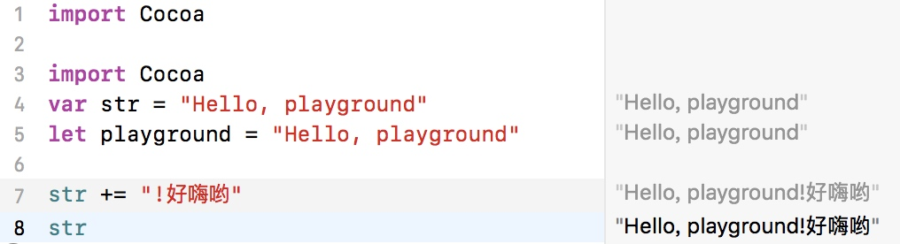
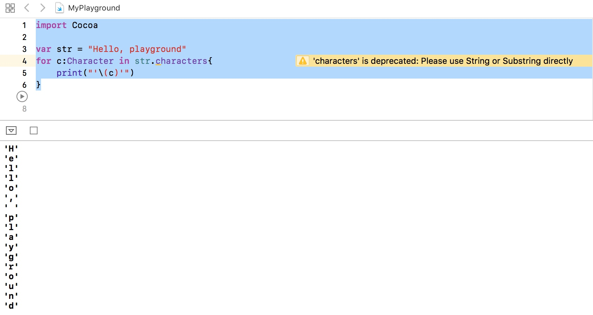
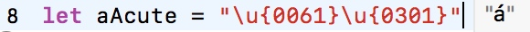

在编程过程中，文本内容是用字符串表示的。你已经见到并用过字符串。比如，"Hello, playground"是一个字符串。跟所有字符串一样，可以认为它是字符的有序集合。实际上，Swift字符串本身并不是集合，但是其底层内容确实以集合形式存在，而字符串类型提供了多种视角来一窥究竟。
使用字符串
import Cocoa
var str = "Hello, playground"
let playground = "Hello, playground"
上面的代码中定义了一个变量的字符串类型str和常量字符串playground，字符串是被双引号引起来的一段文本。
常量是不可以变的，所以当你试图改变playground的值得时候，编译器会报错。

但是变量字符串str是可以改变的。

组成Swift字符串的字符是Character类型。Swift的Character类型表示Unicode字符，组合起来形成String实例。
import Cocoa
var str = "Hello, playground"
for c:Character in str.characters{
print("'\(c)'")
}

Unicode
Unicode是字符编码的国际标准，目标是不用考虑平台即可无缝处理和表达字符。Unicode在计算机上表示人类语言（还有其他形式的通讯符号，比如emoji）。标准中的每个字符都被赋予了唯一的数。
Swift的String和Character类型构建于Unicode之上，并且把大部分的复杂细节都屏蔽了。不过，理解这两种类型如何使用Unicode还是很有用的。这些知识很可能会让你在将来节省不少时间、避免不少挫折。
Unicode标量
从内部实现说，Swift字符串是由Unicode标量（Unicode scalar）组成的。Unicode标量是21位的数，表示Unicode标准中一个特定字符。比如，U+0061表示小写拉丁字母a。U+1F60E表示戴着墨镜的笑脸emoji😎。文本U+1F60E是书写Unicode字符的标准方式。1F60E部分是十六进制数
let oneCoolDude = "\u{1F60E}"
结果是😎
\u{}语法表示Unicode标量，十六进制数放在花括号中。
在Swift中，每个字符都由一个或多个Unicode标量构成。一个Unicode标量对应某种给定语言中的一个基本字符。我们之所以说字符是由“一个或多个”Unicode标量构成的，是因为还存在组合标量（combining scalar）。比如，U+0301表示可组合的重音符号（´）的Unicode标量。这个标量将重音符号放置在它前面的标量所对应的字符上面，也就是与前面的字符组合。用这个量和小写拉丁字母a可以创建字符á，

我们可以看见字符串中所有的标量
for scalar in playground.unicodeScalars {
print("\(scalar.value)")
}
输出为
72
101
108
108
111
44
32
112
108
97
121
103
114
111
117
110
100
计算字符数量
可以使用characters的count属性来判断字符串的字符数量
str.characters.count
索引和区间
Swift中不能直接只用下标语法来取字符串中特定的值。
比如下面这样是不可以的
var playground = "Hello, playground"
print(playground[3]) //❌ 错误，编译器会报错
Swift用名为String.CharacterView.Index的类型记录索引。首先用String类型的startIndex属性。这个属性会以 String.CharacterIndex.Index 的形式返回字符串的起始索引。然后结合起始点和index(_:offsetBy:)方法往前移动直至到达选定的位置。（方法类似于函数，第12章会详细介绍。）
let start = playground.startIndex
let end = playground.index(start, offsetBy: 4)
let fifthCharacter = playground[end] // "o"
startIndex属性获取了字符串的第一个索引，使用index(_:offsetBy:)方法从起始点向前移动到你要的位置。offsetBy参数是Int类型，方法会把它加到第一个索引上。这里传入4表示第5个字符。
调用index(_:offsetBy:)的结果是String.CharacterView.Index，然后将其赋给end常量。最后，用end作为下标访问playground字符串，得到的结果是字符o。（记住playground被设置为了"Hello, playground"。）